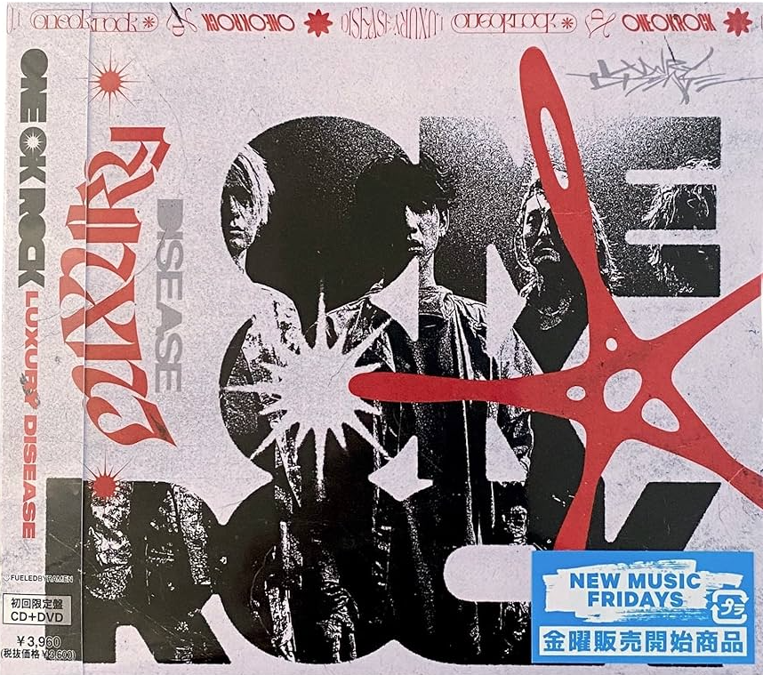
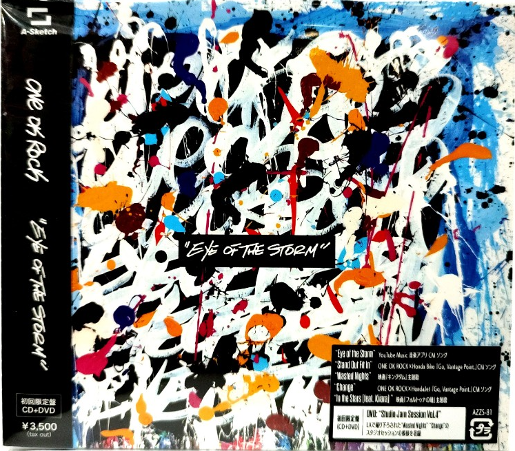
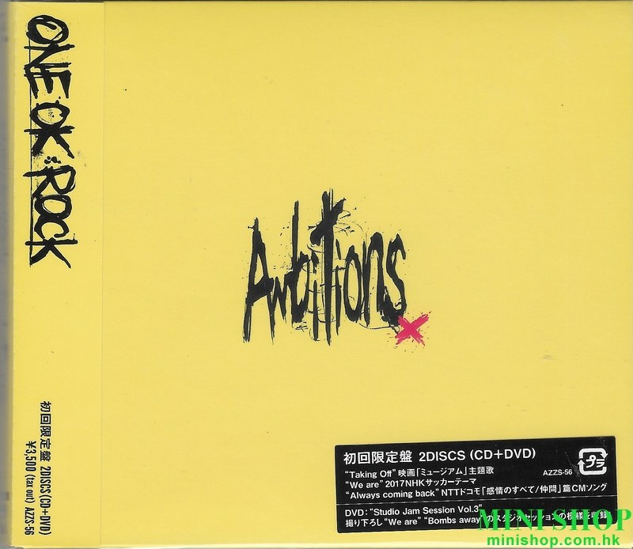
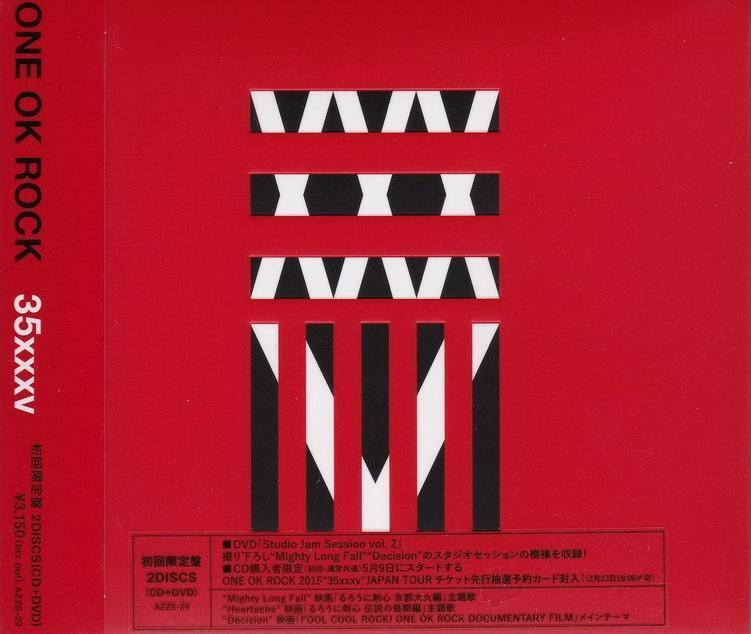

Luxury Disease CD Albúm
CD del albúm "Luxury Disease" lanzado el año 2022.

Eye of the Storm CD Albúm
CD del albúm "Eye of the Storm" lanzado el año 2019.

Ambitions CD Albúm
CD del albúm "Ambitions" lanzado el año 2017.

35xxxv CD Albúm
CD del albúm "35xxxv" lanzado el año 2015.
